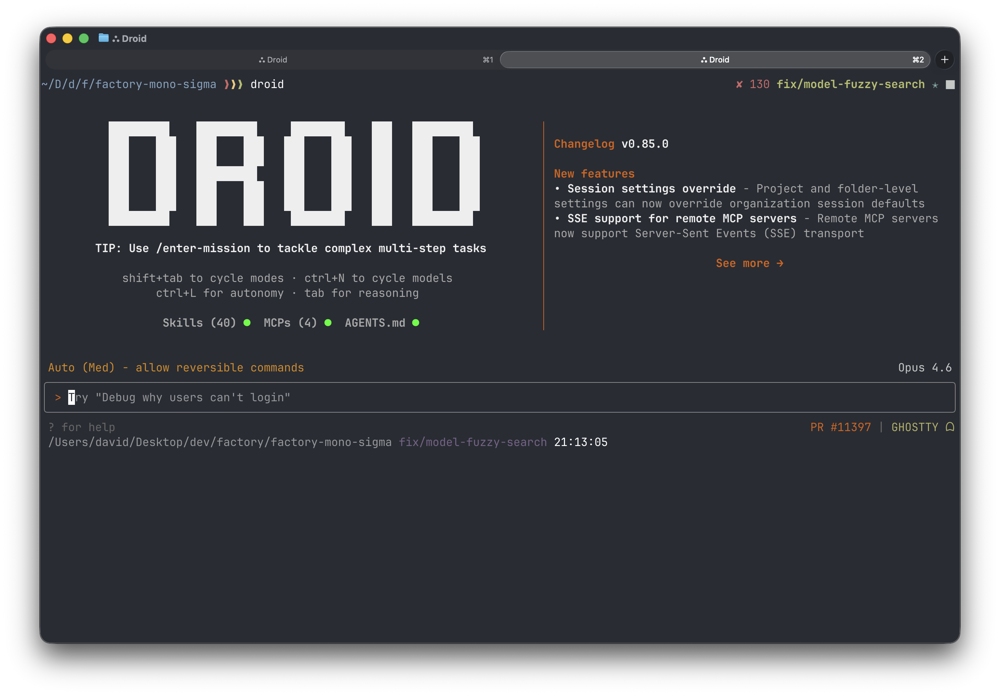
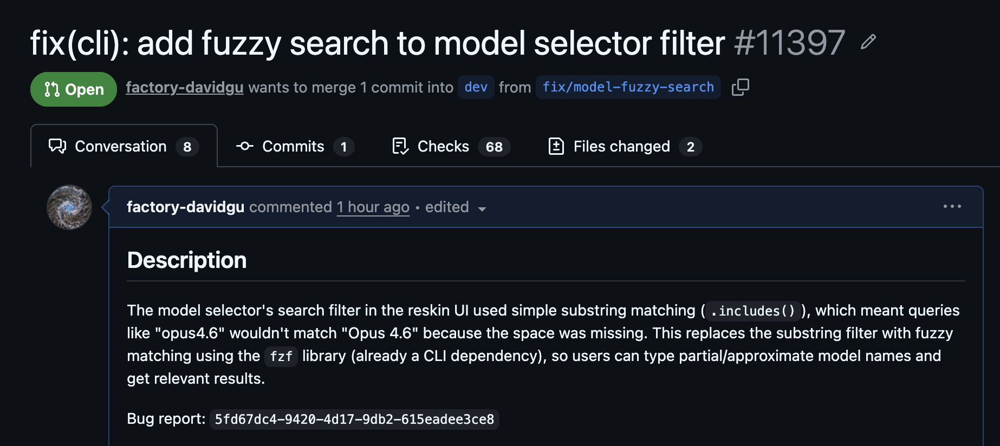

How Droid closes its own feedback loop
David Gu, Member of Technical Staff
A coding agent that lives inside your terminal.

And as every piece of software out there...
we have bugs
SKILL.md markdown file with frontmatter metadata (name, description, etc)/bug-report → /axiom-query → /droid-control → ...
---
name: bug-report
description: Analyze CLI bug reports from S3.
Query Axiom for logs, metrics.
Parses session logs and groups errors by root cause.
---
# Daily CLI Bug Report Analysis
## Workflow
1. Download and extract reports from S3 + script
2. Query Axiom for logs and metrics → /axiom-query
3. Parse session logs, extract errors + schemas + scripts
4. Reproduce in sandboxed TUI → /droid-control
5. Write an e2e regression test → /droid-control
/bug-report
→
bug report id
/axiom-query
→
axiom cli/mcp
/droid-control
→
tuistory
/cli-e2e-testing
/create-pr
+
/follow-up-on-pr
~40 skills in our repo
/bug should be able to fuzzy search models in the /models menu
/bug-report → /axiom-query + code navigation/bug-report downloads from S3, extracts errors/axiom-query gathers metrics and logs/droid-control · tuistory
tuistory launch "droid" -s repro --cols 120 --rows 40
tuistory -s repro wait ">"
tuistory -s repro type "/model"
tuistory -s repro press enter
tuistory -s repro snapshot
tuistory -s repro type "opus"
tuistory -s repro snapshot
tuistory -s repro type "4"
tuistory -s repro snapshot/cli-e2e-testing@microsoft/tui-test, a Playwright-like framework for terminal UIs.
test('fuzzy matches "opus4.6" to "Opus 4.6"', async ({ terminal }) => {
await expect(
terminal.getByText('>', { full: false, strict: false })
).toBeVisible({ timeout: 15000 });
// Open model selector via /model command
terminal.write('/model\r');
// Wait for model selector to appear
await expect(
terminal.getByText('Factory Provided Models', {
full: false, strict: false,
})
).toBeVisible({ timeout: 10000 });
// Type fuzzy query without space
terminal.write('opus4.6');
// Should show Opus 4.6 as a match (fuzzy matching)
await expect(
terminal.getByText('Opus 4.6', { full: false, strict: false })
).toBeVisible({ timeout: 3000 });
});
/create-pr · /follow-up-on-pr/create-pr: lint + commit + branch + pr/follow-up-on-pr: rebases, addresses feedback, fixes CI
Be careful of how you inject external dynamic content
Automating the process.
High fidelity simulations.
Becoming a Dark Factory
David Gu, Member of Technical Staff
We are hiring. < href="https://factory.ai/careers" style="color:var(--mica-6); text-decoration:none;">factory.ai/careers